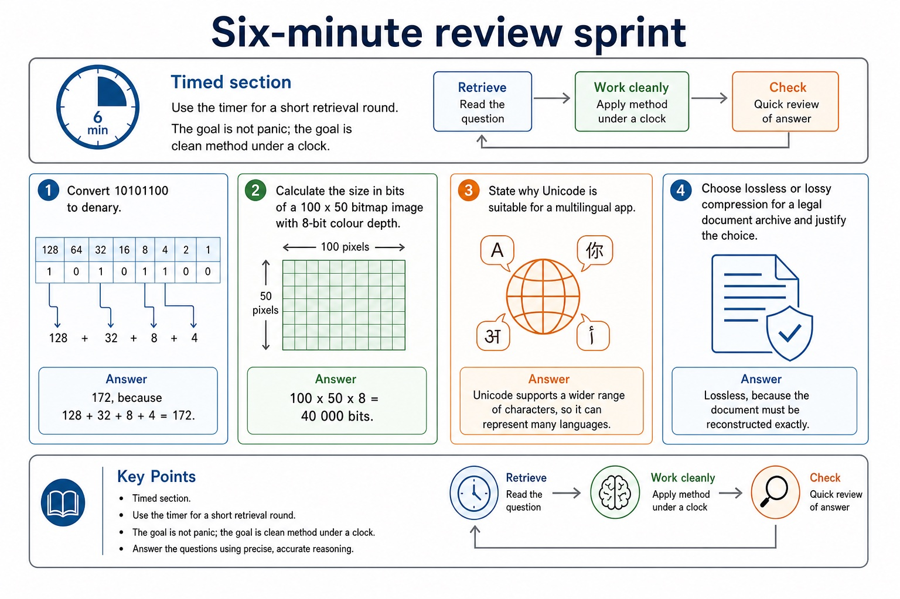
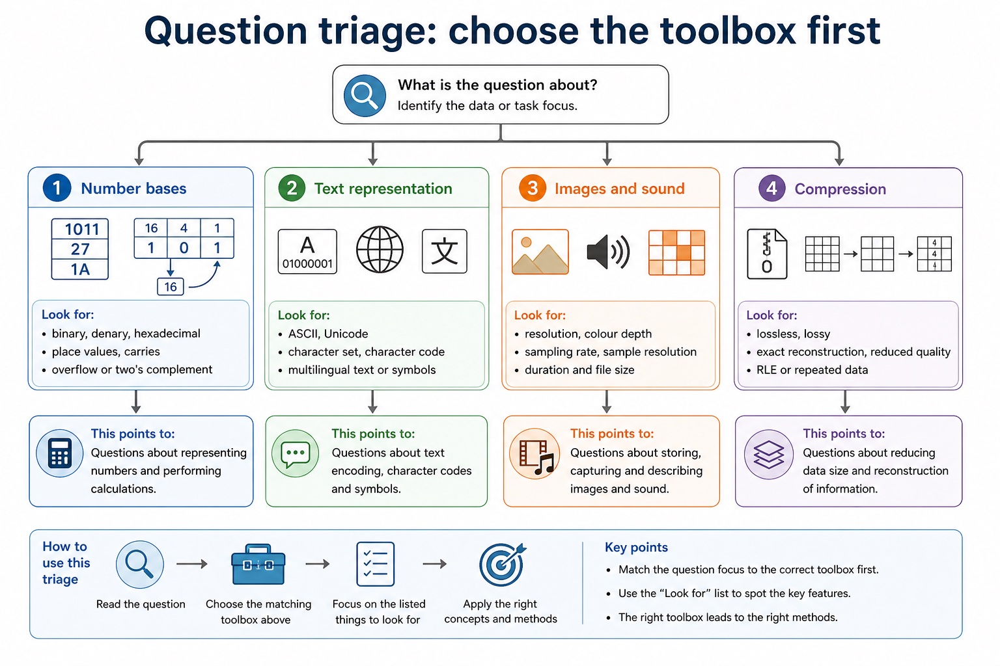

Cambridge AS9618 | Paper 1 | Section 1: Information representation
Binary data units and magnitude prefixes
Flexible-depth lesson
S1.01 | Learn from the diagrams, test the method, then choose the practice you need.
Choose a Quick, Full or Deep route
Quick route
Use the diagnostic, learning objectives, first worked example and foundation question. Stop once the learner can explain the central distinction accurately.
Full route
Use every knowledge-point material set, the worked method, the terminology check and all questions.
Deep route
Add the prerequisite refresher, ask learners to connect the concept checklist, discuss the labelled extension and complete a transfer question without a model answer.
Part 1 | optional depth
Prerequisite knowledge and quick diagnostic
Check that you can use place value and distinguish a value from the way it is represented.
Give one accurate definition or method step before continuing. If it is missing, revisit only that prerequisite.
Part 2 | knowledge-point material sets
Learn each point through visuals
Follow the map, the three-part explanation and the concrete cue. Open precise wording only after the idea is clear.
Open the concept checklist and choose what to teach
Show understanding of binary magnitudes and the difference between binary prefixes and decimal prefixes.
Use and distinguish kibi/kilo, mebi/mega, gibi/giga and tebi/tera; binary prefixes use powers of 1024 and decimal prefixes use powers of 1000.
Supporting diagram library
1 / 2
01
Diagram · 1 of 2
Six-minute review sprint

Open text transcript
Timed section
Use the timer for a short retrieval round. The goal is not panic; the goal is clean method under a clock.
Convert 10101100 to denary.
Calculate the size in bits of a 100 x 50 bitmap image with 8-bit colour depth.
State why Unicode is suitable for a multilingual app.
Choose lossless or lossy compression for a legal document archive and justify the choice.
1: 172, because 128 + 32 + 8 + 4 = 172.
2: 100 x 50 x 8 = 40 000 bits.
02
Diagram · 2 of 2
Question triage: choose the toolbox first

Open text transcript
Number bases
Look for binary, denary, hexadecimal, place values, carries, overflow or two's complement.
Text representation
Look for ASCII, Unicode, character set, character code, multilingual text or symbols.
Images and sound
Look for resolution, colour depth, sampling rate, sampling resolution, duration and file size.
Compression
Look for lossless, lossy, exact reconstruction, reduced quality, RLE or repeated data.
Apply the idea
Worked method
012 TiB drive
022 TiB = 2 x 2^40 = 2,199,023,255,552 bytes.
03A 2 TB drive is 2,000,000,000,000 bytes, so the labels are not interchangeable.
Open precise terminology and exam facts
Use and distinguish kibi/kilo, mebi/mega, gibi/giga and tebi/tera; binary prefixes use powers of 1024 and decimal prefixes use powers of 1000.
Binary prefixes use powers of 1024: kibi (Ki) means 2^10, mebi (Mi) means 2^20, gibi (Gi) means 2^30 and tebi (Ti) means 2^40. Therefore 1 KiB = 1024 bytes, 1 MiB = 2^20 bytes, 1 GiB = 2^30 bytes and 1 TiB = 2^40 bytes.
Decimal prefixes use powers of 1000: kilo (k) means 10^3, mega (M) means 10^6, giga (G) means 10^9 and tera (T) means 10^12. Therefore 1 kB = 1000 bytes, 1 MB = 10^6 bytes, 1 GB = 10^9 bytes and 1 TB = 10^12 bytes. Case and the i in KiB/MiB/GiB/TiB carry meaning.
For binary data units and magnitude prefixes, identify the required concept before describing its mechanism or consequence.
Beyond syllabus / 延伸知识（不要求背诵）
real file formats also store headers and metadata, so two files with the same visible content may still have different sizes.
Part 3 | select by learner need
Practice by question type
staterecallfoundation4 marks
Question 1. State the number of bytes represented by 1 GiB and explain why 1 GB represents a different number of bytes.
Show answer and marking guidance
Answer: 1 GiB = 2^30 bytes / 1,073,741,824 bytes; gibi uses a binary power / multiples of 1024; 1 GB = 10^9 bytes / 1,000,000,000 bytes; giga uses a decimal power / multiples of 1000
Marking guidance: Do not accept 'GiB is bigger' without both numerical definitions.
Common error: For the command word state, perform that exact action; do not replace it with an unrelated fact.
convertcalculateapplication2 marks
Question 2. Convert 3,000,000 bytes to MB.
Show answer and marking guidance
Answer: 3 MB using the decimal prefix mega; kilo, mega, giga and tera use powers of 1000.
Marking guidance: Award one mark for each distinct, technically accurate point or method step.
Common error: Do not repeat the same point in different words; each mark needs a separate idea or method step.
drawdiagramtransfer2 marks
Question 3. Draw lines to match kibi, mebi, gibi and tebi to Ki, Mi, Gi and Ti.
Show answer and marking guidance
Answer: kibi = Ki, mebi = Mi, gibi = Gi and tebi = Ti.
Marking guidance: Award one mark for each distinct, technically accurate point or method step.
Common error: Do not copy the worked example unchanged; transfer the method and check it against the new context.
Related past-paper indexes
Reference
Marks
Command word
Question type
9618/13/S/24 Q1(a)
4
complete
recall
9618/11/W/24 Q1(a)
1
state
recall
9618/12/S/24 Q7(a)
1
identify
calculate
9618/12/W/23 Q3(a)
1
state
recall
Index only: Cambridge question and mark-scheme wording is not reproduced on this public course page.
Part 4 | close when ready
Summary and exam reminders
Summary
Define binary data units and magnitude prefixes with the exact technical vocabulary expected by the syllabus.
Use the lesson method on a fresh context and show the intermediate decision, representation or calculation.
Match the shape of the answer to the command word and the available marks.
Check the final answer against the scenario instead of repeating a memorised sentence.
Common error to correct
Students often treat binary digits as decoration. Correction: every bit position has a value; if the position changes, the value changes.
Exam technique
Follow the command word: state gives a fact; explain links a cause to a consequence; compare covers both sides.
Match the number of independent points or method steps to the available marks.
For binary data units and magnitude prefixes, use the exact technical term before applying it to the scenario.